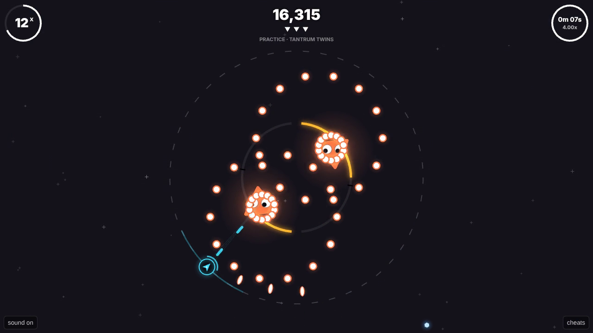

Grumpy Geometry
A shifty-shapes game · press kit

About
Grumpy shapes. One ring. No mercy.
Grumpy Geometry is a bullet hell on a ring, wrapped in an incremental game. You fly round the rim of a tunnel; at its heart sits a furious shape, throwing tantrums made of bullets. Your ship fires by itself: you choose where to be. Brush past bullets to power up, save your laser for the thick of it, and make them pop.
Every run ends (the fuel runs out, the hull breaks, or the boss falls) and every run pays. Spend your credits in a tech tree of over a hundred nodes and fly out again with a meaner ship.
- Four bosses, each with a temper of its own: the Sleepy Circle naps (hit it while it snores), the Sulky Square sulks (and its beams turn back), the Prickly Pentagon lays thorn mines that your fire sets off, and the Huffy Hexagon puffs its cheeks and blows you round the ring.
- Three weapons, swapped for free: Guns that love a close graze, a Turret Bay that drops turrets as you move, and a Capacitor whose laser carves through patterns.
- A tech tree with forks and conversions: turn grazes, spite and spare coins into damage.
- About 20 to 30 minutes to the end of the demo, then a Boss Rush through all four.
Fact sheet
- Developer
- shifty-shapes
- Platform
- browser, on itch.io
- Status
- playable now on itch.io
- Available since
- 2026-10-23
Where to play
itch.io
Everything in one file
Download all images (2.5 MB)
Screenshots, store art and the cover. The trailer is a separate download below.
Trailer
Download the trailer
Screenshots
More video on request
- the bosses are grumpy shapes
- it sulks
- keep moving
- learn the song
- which would you fight first